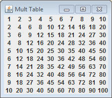
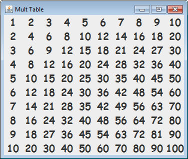
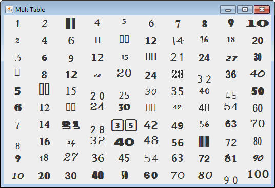
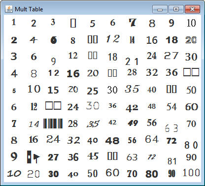
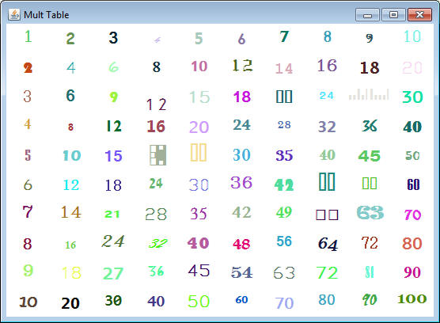

import sacco.gui.*;
import sacco.*;
So far the only thing that we’ve added to our frames are buttons and panels. There are many other objects that work with SFrames, and the next one we’re going to work with is called an SLabel.
An SLabel is simply some text that you can put at a location of a frame or a panel that is not a button. You cannot click it, but you may have noticed that too many buttons can look a little nuts.>
Create a class named LabelPrograms and add the following method:
public static void manyLabels()
{
SFrame frame = new SFrame("Mult Table");
frame.setLayout(new GridLayout(10,10));
for( int r = 1; r<=10; r++)
{
for( int c = 1; c<=10; c++)
{
SLabel label = new SLabel(r*c);
//Line A: Code Goes Here
frame.add(label);
}
}
frame.pack();
frame.setVisible(true);
}
You don’t have to know exactly what the for loops are doing, but notice that
the item being added to the frame is an SLabel instead of an SButton.
Run the program and you should get the following:

These can go essentially everywhere that an SButton can do and they act
pretty much the same way.
More about Obejcts: The Font Class
So far we’ve actually been dealing with some complex objects that do lots of
crazy things. Object are not always this tricky. Some objects are only created
so that some group of instance fields can be grouped together.
For example, there is an Object class named Font that is very simple. It has
four instance fields:
-a String to represent the font name
-an int to represent the font size
-a boolean to represent if it’s bold
-a boolean to represent it it’s italic
The reason for having an object like this is that it makes it easy to pass all
of this information around using a single variable instead of having to use four
separate variables. Once a Font object is constructed it may be passed along to
the SLabel using the setFont method.
Go to the location in the code that reads //Line A: Code Goes Here and add the
following:
Font f = new Font("Comic Sans MS",20);
f.setBold(true);
label.setFont(f);
We’ve created a Font object with “Comic Sans MS” as the font and 20 pts as the size. Once that Font object was created, we used the SLabel method setFont to change the font to what we've created. Notice that the constructor of the Font class does not take in any information relating to Bold or Italic. Those must be take care of separately. Running the program should give you the following:

What Fonts to use:
The issue with using these fonts is that they have to be already stored on
the computer. If a default font can’t be found, the default font will be used.
There is a command that will help you determine what fonts are already on the
computer.
Add a method with the following header:
public static void printFontList()
The first line of the method should be the following:
String[] fontArray = java.awt.GraphicsEnvironment.getLocalGraphicsEnvironment().getAvailableFontFamilyNames();
This call is terrifyingly long, but after it’s completed, the fontArray
variable should have an array of Strings that are all of the font names that
this computer can use. In order to read it you’re going to have to print it out.
Use a for loop to get every String in the fontArray and print it out.
When you run this method you should be able to see the large list of Fonts that
your computer can use. Try taking copying one of the printed Font
names and changing your program's Font from "Comic Sans MS Bold" to the new Font
name.
Randomizing Fonts
Add another method with the following header:
public static String getRandomFontName()
The purpose of this method will be to return the random name of a font from
the list of available fonts. The first line of this method should again be that
big ugly line of code necessary to get the array of Fonts from the operating
system.
After you have the String[] you’ll want to get a random one. First you need to
get a random number from 0 to the length of the array. That random number will
be the index of the String that you should return.
Test out your method by compiling and running the method several times. If you
get a different font name every time you’re good to go.
Utilizing the getRandomFontName method
Since our demo has so many labels, we should assign random fonts to each of them. Go back to the firstLabel method and instead of using the font name that you chose, put the method getRandomFontName() there. When you run it you should get something similar (but not identical) to the picture below. It’s alright if some of the Fonts are represented with empty rectangles. That will happen from time to time.

The Color Class
Another common simple object is the Color class. When images are created,
each pixel is made up of a red, a green, and a blue value. Each of these numbers
has a maximum value of 255. For example: A pure red color would have a Red:255
Green:0 Blue:0.
A Color object’s instance fields are simply those three ints; one for red, one
for green, and one for blue.
Head back to that same section of code that we’ve been working with. Before the
loop begins, add the following line of code:
Color col = new Color(255,255,255); //White frame.setBackgroundColor(col);
If you run the program now you should see that the background has changed to white instead of that ugly grey.

More Randomizing:
Add another method with the following header:
public static Color getRandomColor()
The purpose of this method is to construct and return a Color object with
random values for the red, green, and blue. Don’t use one random number for all
three, you will have to create three different random ints in order to get a
random color. This time the method is returning an ENTIRE COLOR OBJECT, so
return the variable that holds your constructed Color.
Since this method returns an object instead of a String, it will be much harder
to test.
Back in our multiplication table, in the same area where you’re setting a random
font you should add the following line of code:
Color randCol = getRandomColor(); label.setColor(randCol);
Our methods used to return simple Strings or ints, but this time it returns a
Color object, so we have to use a Color variable. The only thing left to do is
to set the color of the SLabel using the setColor command.
Hopefully running this will display a white background and each label is a
random font and color. An example is below:

Labels with Images:
One thing about SLabels is that they can also have an image attached to them, but again this requires a new object type called Picture, which represents an image. THIS IS NOT IN SACCO.GUI.*;, IMPORT SACCO.*;
First we need an image to work with. Right-click and "save as" the following image INTO YOUR PROJECT FOLDER. Name it java-logo.png
Now that the image is in your folder, we need to get a Picture object using the file that we've just downloaded. Be careful, Picture objects get constructed differently. You need to use the Picture.loadFromFile method and pass the file name.
For example: Picture logo = Picture.loadFromFile("java-logo.png"); should load the image and give us the Picture object logo to work with (assuming you've downloaded it correctly). Once you have a Picture object, you can use SLabel's .setImage method to attach the Picture to a Label.
Add the following method to your class:
public static void firstImageLabel()
{
SFrame frame = new SFrame("First Image Label");
frame.setLayout(new GridLayout(1,1));
SLabel lab = new SLabel();
Picture pic = Picture.loadFromFile("java-logo.png");
lab.setImage(pic);
frame.add(lab);
frame.pack();
frame.setVisible(true);
}
Run the program an test it out. You should see the logo in your frame where the label was placed.
Create a new method with the following header:
public static void chessBoard()
This method will be in charge of the following layout:
There are many different images here, but they're located in a different location and you're going to load them in a different way. These are actually packaged inside of sacco.jar and instead of loadFromFile, we're going to use loadFromJar to get things going. Since there are so many images, here's a String[] will all of the Strings necessary to load each piece.
String[] names = {"Chess/Black P.gif", "Chess/Black P.gif", "Chess/Black P.gif", "Chess/Black P.gif", "Chess/Black P.gif", "Chess/Black P.gif", "Chess/Black P.gif", "Chess/Black P.gif", "Chess/Black R.gif", "Chess/Black N.gif", "Chess/Black B.gif", "Chess/Black Q.gif", "Chess/Black K.gif", "Chess/Black B.gif", "Chess/Black N.gif", "Chess/Black R.gif"};
Your method should construct a frame (GridLayout) and then loop through the array, each time using Picture.loadFromJar to get a picture using a String from the array, set a new SLabel's image to that Picture, and then add it to the frame. You should do this instead of copying and pasting 16 times.